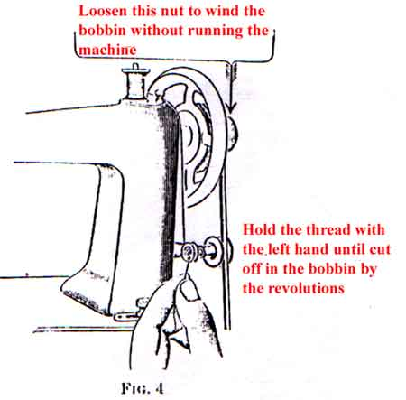

Manual supplied courtesy of Mae Lopez
| A -- SPOOL
PIN |
K -- BALANCE
WHEEL NUT |
| B -- NEEDLE
BAR |
L -- BOBBIN
WINDER |
| C -- PRESSURE
REGULATING THUMB SCREW |
M -- STITCH
REGULATING THUMB NUT |
| D -- THREAD
RETAINER |
N -- BAND
WHEEL |
| E -- TENSION
THUMB NUT |
O -- BRACE |
| F -- TAKE-UP
LEVER |
P -- TREADLE |
| G -- THREAD
CONTROLLER |
Q -- PITMAN |
| H -- NEEDLE
SET SCREW |
R -- BAND
WHEEL CRANK |
| I -- PRESSURE
FOOT SCREW |
S -- LEG |
| J -- BALANCE
WHEEL |
T -- DRESS
GUARD |
Release the balance wheel by turning the balance wheel nut over towards you as far as it will go; the balance wheel will then turn freely without moving the sewing mechanism; place the feet squarely on the treadle and with the right hand start the belt upward which will turn the band wheel and the loose pulley from you.
Continue the motion thus begun by the pressure of the feet, first on one and then on the other side of the treadle; practice this motion until the balance wheel can be kept in continuous rotation by the use of the feet alone. Then turn the balance wheel nut over from you as far as possible, raise the presser foot by the lifter on the back of the arm and run the machine, without trying to sew, until you can without any difficulty keep up a regular motion.
The leather belt which gives motion to the machine should always be tight enough not to slip and no tighter; not so tight as to prevent the easy motion of the machine. If the belt is too long, uncouple it and cut off squarely from one end to the desired length; make another hole about one-quarter of an inch from the end cut.
TO THROW OFF THE BELT. Turn the balance wheel from you and slip the belt off by pressing it to the right.
TO THROW ON THE BELT. Place the belt in the groove of the balance wheel and let it hang loosely; place your feet on the treadle and start the band wheel toward you, running it slowly so that the lug on the band wheel will catch the belt and switch it into the groove without further effort on your part.
Turn the balance wheel until the needle bar is at its highest point, loosen the needle set screw, insert the shank of the needle with its flat side toward the screw; be sure to push the needle as far up as it should go and secure it firmly by turning the needle set screw with the screw driver. Clean the cross hole through the needle bar above the thimble if dirt prevents the needle going as high as it should.
Remove the bed slide (front), have the point of the hook toward you, as shown in Fig. 2, with the ball of he thumb (not necessary to use the finger or the thumb nail), open the latch until it stands out straight, then brush the bobbin outward, until it hangs on the latch, for removal (see Fig 3).The inside of the bobbin case should be wiped out occasionally with an oiled rag to remove lint or dirt.
To wind the bobbin without running the machine, hold the balance wheel with the left hand and with the right hand turn the balance wheel nut toward you to loosen the pulley.
Swing the bobbin winder until its pulley comes in contact with the belt, and place the bobbin on the spindle. If the bobbin does not revolve with the spindle, spread the slot in the spindle with the screw driver.
Wind the thread from the spool once around the arm cap screw (see Fig 4), and pass the end of the thread from the inside through the hole in the bobbin; hold the thread firmly until a few turns of the winder cuts off the thread in the bobbin. Be sure that the thread is cut off and does not hang out of the hole in the bobbin to make bad sewing. If necessary, guide the thread with a touch of the finger.

CAUTION. Stop winding when the bobbin is nearly full -- within three layer of thread from the top edge of the bobbin.
After winding the bobbin, push down the bobbin winder, then tighten the pulley securely by turning the balance wheel nut from you. Do not forget to tighten the pulley.
With the left hand place the bobbin in the bobbin case with the thread leading from the top toward you; hold the end with the right hand (see Fig 5); guide the thread into the notch and close the latch, then pull the thread from you until it is drawn up under the notch at the end of the tension spring (see Fig 6). The bobbin in Fig 5 is shown partly cut away giving a view of the direction in which the thread should unwind.
Fig 6 shows the bobbin case threaded.
Place the spool on the spool pin, pas the thread under the thread retainer guide wire through thread retainer (A), down in front and once around tension pulley (B), thence under thread controller spring (C), up into take-up lever (D), down to thread leader (E) and needle bar thread guide (F) to the needle; then thread the needle from right to left, as shown in Fig 7, and draw two or three inches of thread through the eye of the needle when the take-up lever is at its highest point. Do not let thread retainer (A) or the groove in the tension pulley become clogged with lint, dirt or knots of thread. In using fine silk, wind it twice around the tension pulley should it slip without turning the pulley.
Let the thread extend through the needle two or three inches when the take-up lever is at its highest position. Hold the end of the upper thread slack and turn the balance wheel carefully from you while the needle goes down and up, and the point down to the presser foot (see Fig 7), bringing the take-up lever to its highest position. Keep your feet on the treadle, as foot pressure on the treadle holds the take-up lever at its highest position, then draw the upper thread and the under thread will come up with it (see Fig 8). Pass both threads back under the presser foot (see Fig 9).